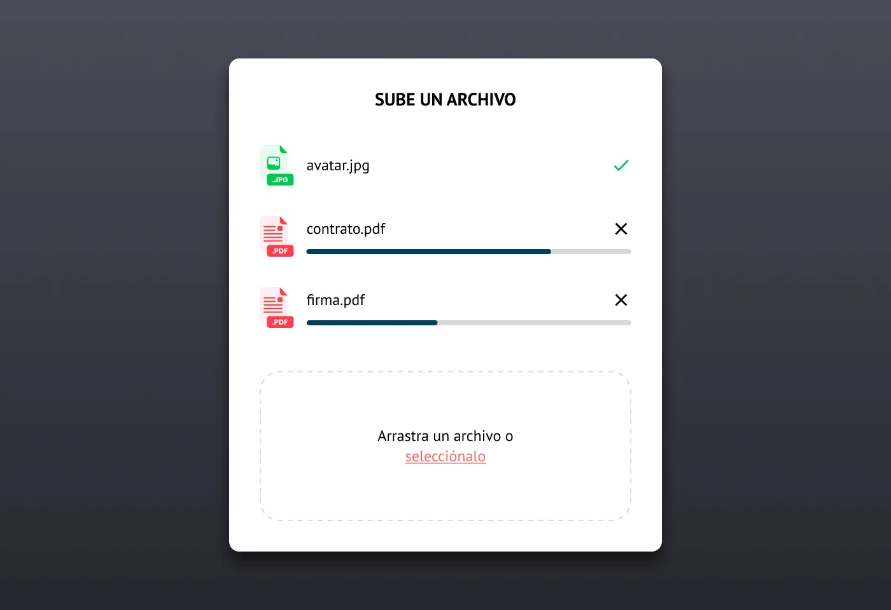
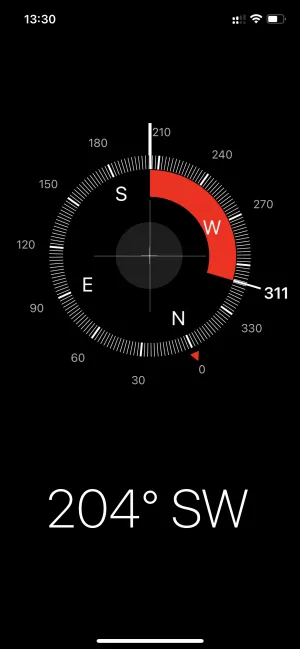
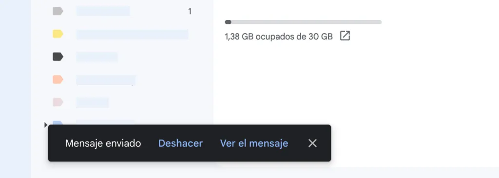
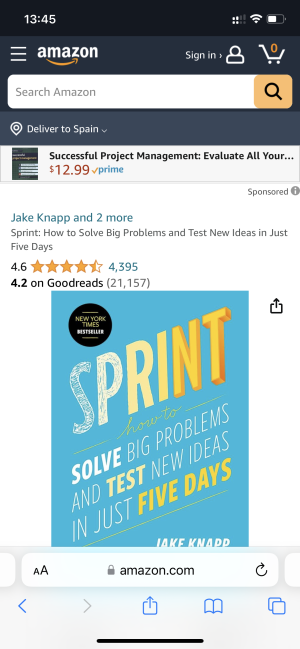
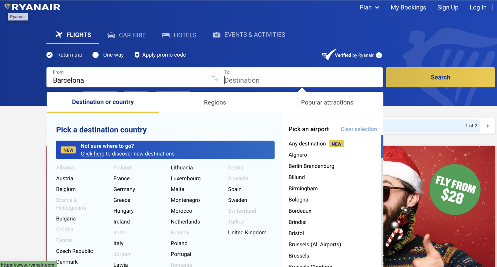
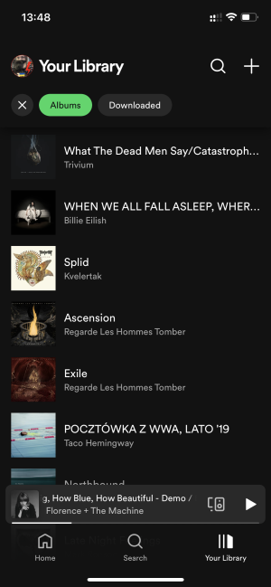
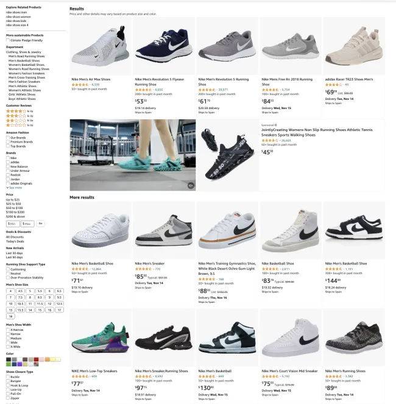
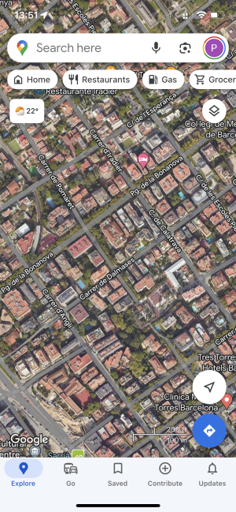
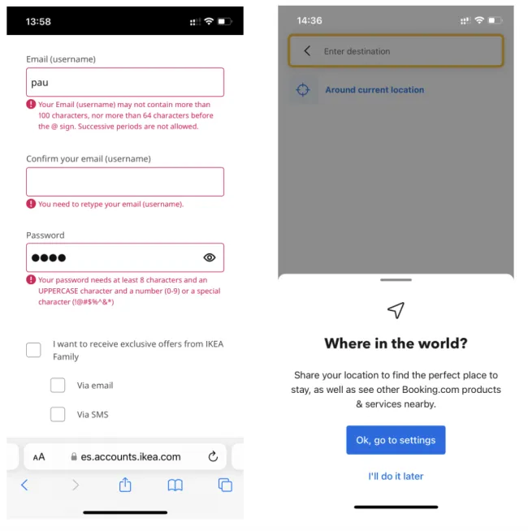
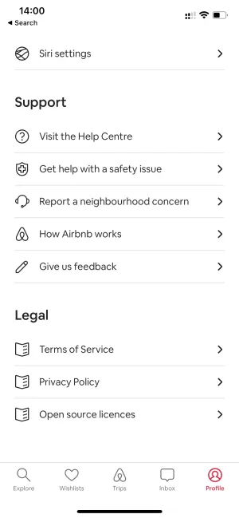

Principios de UX para Desarrolladores
Objetivos de aprendizaje
Al finalizar esta unidad, el alumnado será capaz de:
- Comprender y aplicar los fundamentos del Diseño Centrado en el Usuario (UCD) en el desarrollo de interfaces de aplicaciones informáticas, diferenciando claramente entre las preferencias personales del desarrollador y las necesidades reales de las personas usuarias.
- Analizar y evaluar cualquier interfaz de aplicación utilizando las 10 heurísticas de usabilidad de Jakob Nielsen, identificando violaciones de usabilidad y proponiendo soluciones concretas de implementación en Angular.
- Diseñar y documentar flujos de usuario completos para tareas habituales en aplicaciones de gestión, identificando el happy path, los casos extremos y los estados de error.
- Organizar la información de una interfaz de aplicación aplicando principios de Arquitectura de Información, seleccionando patrones de navegación adecuados al tipo de contenido y al perfil de la persona usuaria.
- Aplicar principios fundamentales de diseño visual desde la perspectiva del desarrollador, incluyendo jerarquía visual, leyes de Gestalt, uso del espacio en blanco y criterios de contraste, para construir interfaces claras y funcionales sin necesidad de ser diseñador gráfico.
- Redactar microcopy efectivo para botones, mensajes de error, estados vacíos y etiquetas de formularios, mejorando la experiencia de uso mediante textos claros, humanos y orientados a la acción.
- Validar la usabilidad de una interfaz mediante técnicas ligeras y accesibles para equipos de desarrollo: test de pasillo, evaluación heurística y dogfooding, documentando hallazgos y propuestas de mejora.
Resultado de aprendizaje asociado
Esta unidad contribuye al RA 4 del módulo profesional 0488 Desarrollo de interfaces (CFGS en Desarrollo de Aplicaciones Multiplataforma, DAM — currículo andaluz, BOJA; actualizado por el RD 405/2023, BOE):
RA 4. Diseña interfaces gráficas identificando y aplicando criterios de usabilidad y accesibilidad.
Criterios de evaluación oficiales que se trabajan en esta unidad:
- CE a) Se han identificado los principales estándares de usabilidad y accesibilidad.
- CE b) Se ha valorado la importancia del uso de estándares para la creación de interfaces.
- CE h) Se ha verificado que los mensajes generados por la aplicación son adecuados en extensión y claridad.
- CE i) Se han realizado pruebas para evaluar la usabilidad y accesibilidad de la aplicación.
Conocimientos previos
Para afrontar esta unidad con garantías, el alumnado debe dominar los siguientes conceptos y habilidades:
- Fundamentos de HTML5 semántico y accesibilidad básica, necesarios para comprender cómo la estructura del marcado impacta directamente en la experiencia de usuario.
- Conocimientos de CSS3 y maquetación responsive, ya que la usabilidad está íntimamente ligada a la presentación visual y la adaptabilidad a diferentes dispositivos.
- Programación en TypeScript y conocimientos básicos del framework Angular, dado que los ejemplos de implementación y las actividades prácticas se desarrollarán en este entorno.
- Manejo básico de herramientas de diseño de interfaces como Figma, cubierto en unidades anteriores, para poder plasmar visualmente los conceptos de UX antes de implementarlos.
- Comprensión del ciclo de vida del desarrollo de software y de metodologías ágiles, ya que la UX se integra de forma iterativa en estos procesos.
Contenidos
- Diseño Centrado en el Usuario (UCD)
- Las 10 heurísticas de usabilidad de Jakob Nielsen
- Arquitectura de Información (IA)
- Flujos de usuario (User Flows)
- Principios de diseño visual para desarrolladores
- UX Writing (microcopy)
- Técnicas de validación de UX sin ser diseñador
Desarrollo teórico
1. Diseño Centrado en el Usuario (UCD)
El Diseño Centrado en el Usuario es una filosofía de diseño y desarrollo que sitúa a la persona usuaria como eje central de cada decisión tomada durante la construcción de una aplicación. No es una metodología en sí misma, sino un enfoque que permea todas las fases del proceso de desarrollo. En el ámbito de la Formación Profesional, donde el alumnado tiende a pensar que "si a mí me gusta cómo queda, está bien", es fundamental establecer desde el principio la diferencia radical entre diseño basado en gustos personales y diseño basado en evidencia proveniente de personas usuarias reales.
La premisa fundamental del UCD es contundente: el desarrollador no es la persona usuaria. Por mucho que conozcamos la aplicación, su arquitectura interna, sus limitaciones técnicas y sus posibilidades, nuestra perspectiva está sesgada por ese conocimiento. La persona usuaria se acerca a la aplicación con un objetivo concreto y no quiere entender cómo funciona por dentro; quiere completar su tarea de la forma más eficiente y satisfactoria posible. El UCD nos obliga a salir de nuestra zona de confort técnica y a observar, preguntar, medir e iterar.
El proceso clásico de Design Thinking ofrece un marco excelente para implementar UCD en cualquier proyecto de desarrollo. Este proceso consta de cinco fases que no son estrictamente lineales, sino que se solapan y retroalimentan entre sí.
La primera fase es la de empatía o investigación, en la que se busca comprender profundamente a las personas usuarias: sus necesidades, sus dolores, sus objetivos, su contexto de uso y sus limitaciones. Esta fase implica técnicas como entrevistas en profundidad, observación contextual (shadowing), encuestas y análisis de datos de uso existentes. En una aplicación de gestión para una empresa andaluza, por ejemplo, esta fase implicaría pasar tiempo con los administrativos entendiendo cómo realizan actualmente su trabajo, qué herramientas utilizan, qué procesos son más tediosos y dónde se producen los cuellos de botella.
La segunda fase es la de definición, en la que se sintetiza toda la información recopilada para formular el problema de forma clara y accionable. Una técnica muy utilizada es el point of view (POV), que estructura el problema en tres componentes: la persona usuaria, su necesidad y el insight o revelación. Por ejemplo: "Un administrativo de clínica dental necesita una forma rápida de confirmar citas porque actualmente pierde 45 minutos al día llamando por teléfono a cada paciente". Esta definición guía todo el trabajo posterior y evita que el equipo se desvíe hacia funcionalidades que nadie necesita.
La tercera fase es la de ideación, donde se generan múltiples soluciones potenciales al problema definido. Aquí se fomenta la cantidad sobre la calidad inicial: sketches, wireframes de baja fidelidad, diagramas de flujo, notas adhesivas en una pizarra. Es fundamental que en esta fase participen tanto desarrolladores como personas usuarias representativas, y se evite descartar ideas prematuramente. Técnicas como los Crazy Eights, donde cada participante dibuja ocho variaciones de una interfaz en ocho minutos, ayudan a generar diversidad de enfoques.
La cuarta fase es la de prototipado, que consiste en materializar las ideas seleccionadas en representaciones tangibles y evaluables. En desarrollo de interfaces, los prototipos pueden ir desde bocetos en papel hasta prototipos interactivos de alta fidelidad construidos en Figma. La clave del prototipado en UCD es que debe ser lo suficientemente concreto para que la persona usuaria pueda interactuar con él, pero lo suficientemente barato como para que el equipo no tenga miedo a descartarlo si no funciona. En un proyecto Angular, un prototipo puede ser incluso un componente aislado sin conexión al backend, servido en local, que permita validar una interacción concreta.
La quinta y última fase es la de testeo, donde se pone el prototipo frente a personas usuarias reales para observar cómo interactúan, dónde se bloquean, qué entienden a la primera y qué les genera confusión. El testeo en UCD no es una auditoría de calidad que se hace al final; es un proceso continuo que se realiza con cada iteración. Se recomienda el testeo temprano con prototipos de baja fidelidad: es más barato descubrir que una navegación no funciona cuando aún es un dibujo en papel que cuando ya está implementada con TypeScript y probada con tests unitarios. Los hallazgos del testeo alimentan una nueva iteración del ciclo completo, refinando progresivamente la solución.
Diferenciar UCD de "lo que a mí me gusta" es quizás la lección más importante de esta unidad. Cuando un desarrollador dice "este botón debería ser azul porque queda mejor", está anteponiendo su criterio estético a cualquier dato. La pregunta correcta en UCD es: "¿Qué color de botón maximiza la tasa de clics en esta acción concreta para nuestro perfil de usuario?". Esta diferencia de mentalidad es la que separa las aplicaciones que la gente usa porque no tiene alternativa, de las aplicaciones que la gente elige usar porque le resuelven problemas de forma eficaz y agradable.
2. Las 10 Heurísticas de Nielsen
Las 10 heurísticas de usabilidad de Jakob Nielsen, publicadas en 1994 y refinadas desde entonces, constituyen el marco de referencia más utilizado mundialmente para evaluar la usabilidad de interfaces. No son reglas rígidas, sino principios generales que guían el diseño de interacción y que, cuando se violan, suelen generar problemas de usabilidad. A continuación se detallan una por una, con ejemplos concretos de aplicación en interfaces reales y pautas para su implementación en proyectos Angular con Tailwind CSS.
Heurística 1: Visibilidad del estado del sistema. La interfaz debe mantener informada a la persona usuaria sobre lo que está ocurriendo en cada momento, proporcionando retroalimentación adecuada en un tiempo razonable. Esta heurística es la base de la confianza: si la persona usuaria hace clic en "Guardar" y no percibe ninguna respuesta, asumirá que la aplicación no ha funcionado y volverá a hacer clic, potencialmente generando registros duplicados o errores en cascada. En Angular, esto se implementa mediante varios patrones. Los spinners o indicadores de carga visibles durante operaciones asíncronas son la manifestación más básica: un componente de loading que se muestra mientras un observable está pendiente. Las notificaciones toast tras acciones completadas ("Cambios guardados correctamente", "Documento eliminado") proporcionan cierre cognitivo a la operación. Las breadcrumbs o migas de pan indican a la persona usuaria dónde se encuentra dentro de la jerarquía de navegación de la aplicación. Las barras de progreso en operaciones largas como subidas de archivos o procesamiento de datos permiten anticipar el tiempo restante. Un ejemplo concreto en Angular sería un servicio de notificaciones que, mediante RxJS y señales, exponga un array de mensajes toast que un componente flotante renderice con animaciones de entrada y salida.

en todo momento el usuario está informado del proceso de subida de cada uno de los archivos
Heurística 2: Relación entre el sistema y el mundo real. La aplicación debe comunicarse utilizando el lenguaje de las personas usuarias, con palabras, frases y conceptos que les resulten familiares, en lugar de términos orientados al sistema o jerga técnica. Esta heurística combate el sesgo del desarrollador, que tiende a nombrar las cosas según su implementación interna. Un botón que diga "Ejecutar query" comunica mucho menos que "Buscar pacientes". Un mensaje de error que diga "Foreign key constraint violation" es incomprensible para una administrativa; debe traducirse a "No puedes eliminar este paciente porque tiene citas pendientes. Cancela primero las citas." Los iconos deben ser universalmente reconocibles: un sobre para correo, una lupa para búsqueda, una casa para inicio. En Angular con Tailwind, esto se traduce en una revisión sistemática de todos los textos de la interfaz, preguntándose en cada caso: "¿Utiliza esta persona esta palabra en su día a día?".

la app de brújula de iOS está diseñada para parecerse a una brújula de verdad. De esta manera el usuario puede aplicar lo que ya sabe por su experiencia en el mundo real sobre cómo funciona el objeto y no tiene que aprender algo nuevo antes de usarla
Heurística 3: Control y libertad del usuario. Las personas usuarias a menudo eligen opciones por error y necesitan una salida de emergencia claramente señalizada para abandonar el estado no deseado sin tener que pasar por un proceso complejo. Esto implica proporcionar deshacer y rehacer, cancelar operaciones en curso, y rutas de escape visibles. En interfaces de aplicación, cada modal debe tener un botón de cierre visible y responder a la tecla Escape. Cada paso de un asistente o wizard debe permitir volver al paso anterior. Las acciones destructivas deben ser reversibles siempre que sea posible: eliminar un elemento debería moverlo a una papelera de reciclaje durante un tiempo antes de la eliminación definitiva. Angular facilita esto con el enrutador: los guardias de ruta pueden preguntar antes de abandonar un formulario con cambios sin guardar. Las migas de pan implementadas con Angular Router permiten navegación jerárquica hacia atrás. El historial de navegación del navegador debe funcionar correctamente en aplicaciones SPA, lo que requiere una configuración cuidadosa de las rutas y el uso de LocationStrategy adecuado.

el usuario cuenta con la opción para poder deshacer el paso que acaba de realizar
Heurística 4: Consistencia y estándares. Las personas usuarias no deberían tener que preguntarse si diferentes palabras, situaciones o acciones significan lo mismo. Esta heurística aplica tanto a la consistencia interna de la aplicación como al seguimiento de las convenciones de la plataforma. Si en una pantalla el botón de guardar es azul y está a la derecha, debe ser azul y estar a la derecha en todas las pantallas. Si el icono de eliminar es una papelera en una tabla, no puede ser un aspa en otra. La consistencia reduce la carga cognitiva porque la persona usuaria transfiere su aprendizaje de unas partes de la aplicación a otras. En proyectos Angular con Tailwind, la consistencia se logra mediante un Design System implementado como componentes reutilizables: un componente de botón que acepta variantes controladas (primary, secondary, danger) y que en todas partes se comporta igual visual y funcionalmente. Los estándares de plataforma también importan: en la web, el logo suele llevar al inicio, los enlaces se subrayan, los campos obligatorios llevan asterisco. Violar estas convenciones por originalidad confunde a las personas usuarias.

El icono de la lupa y del menú, por ejemplo, son (casi) universalmente reconocidos y no tendría sentido usar otros que los usuarios no entenderían.
Heurística 5: Prevención de errores. Mejor que un buen mensaje de error es un diseño que evite que el error ocurra en primer lugar. Esta heurística invita a diseñar las restricciones adecuadas en la interfaz para que sea difícil equivocarse. En formularios Angular, esto se implementa con validadores reactivos que deshabilitan el botón de envío hasta que todos los campos sean válidos, en lugar de permitir el envío y luego mostrar un listado de errores. Los campos numéricos deben forzar la entrada numérica (inputs de tipo number con step adecuado). Los selectores deben sustituir a los campos de texto libre siempre que el dominio de valores sea conocido y finito. Las acciones destructivas deben solicitar confirmación explícita, pero con moderación: no se debe pedir confirmación para cada pequeña acción, solo para aquellas con consecuencias significativas e irreversibles. El autocompletado y las sugerencias basadas en el contexto (typeahead) reducen drásticamente los errores de entrada de datos. Angular Material CDK proporciona componentes de autocompletado accesibles. En campos como DNI o IBAN, las máscaras de entrada (input masks) guían el formato correcto desde el primer carácter.

La pantalla de selección de destinos de Ryanair no permite a los usuarios seleccionar un país al que no se pueda volar desde el origen seleccionado.
Heurística 6: Reconocimiento antes que recuerdo. La interfaz debe minimizar la carga de memoria de la persona usuaria haciendo visibles los objetos, las acciones y las opciones. La persona usuaria no debería tener que recordar información de una parte a otra del diálogo o de una pantalla a otra. Un menú de navegación siempre visible es mejor que comandos que la persona usuaria debe teclear. Un historial de búsquedas recientes evita tener que recordar qué se buscó la semana pasada. Los favoritos permiten guardar accesos directos a las pantallas más utilizadas. En la implementación, los breadcrumbs mantienen visible el contexto de navegación. Los campos de formulario mantienen visibles sus etiquetas (labels) incluso cuando el campo tiene valor. Las tablas de datos mantienen visibles las cabeceras al hacer scroll (sticky headers). En Angular, un servicio de historial puede persistir en localStorage las últimas acciones o búsquedas, permitiendo a la persona usuaria recuperar contexto sin esfuerzo.

El listado de álbumes de Spotify enseña también la miniatura de la portada para que sea más fácil reconocer los discos y uno no tenga que leer los títulos cada vez que quiere escuchar algo.
Heurística 7: Flexibilidad y eficiencia de uso. La interfaz debe atender tanto a personas usuarias novatas como a expertas, proporcionando aceleradores que pasan desapercibidos para las novatas pero que permiten a las expertas operar con mayor rapidez. Los atajos de teclado son el acelerador por excelencia: Ctrl+S para guardar, Ctrl+Z para deshacer, Ctrl+F para buscar, Escape para cerrar modales. En aplicaciones de gestión intensivas en entrada de datos, los atajos de teclado pueden multiplicar la productividad. Angular CDK proporciona utilidades para gestionar atajos de teclado de forma declarativa. La personalización de la interfaz (columnas visibles en tablas, orden de los elementos del menú, tamaño de la fuente) permite a cada persona usuaria adaptar la aplicación a su flujo de trabajo específico. Las plantillas guardadas y las acciones por lotes (selección múltiple + operación masiva) son ejemplos de eficiencia para personas usuarias avanzadas.

Los muchos filtros de Amazon son un buen ejemplo de este heurístico. Los usuarios pueden encontrar el producto que desean de muchas maneras distintas según sus necesidades, sus prioridades y su manera de navegar.
Heurística 8: Diseño estético y minimalista. Los diálogos y las interfaces no deberían contener información irrelevante o raramente necesaria. Cada unidad extra de información en un diálogo compite con las unidades relevantes y disminuye su visibilidad relativa. Esta heurística es especialmente relevante en aplicaciones de gestión, donde la tentación de mostrar todos los datos disponibles en una sola pantalla conduce a interfaces abrumadoras. El minimalismo no significa eliminar funcionalidad, sino priorizarla y organizarla. Las acciones principales deben ser prominentes; las secundarias, accesibles pero discretas; las terciarias, ocultas hasta que se soliciten. En Tailwind, esto se traduce en un uso generoso del espacio en blanco (p-, m-, gap-), jerarquía tipográfica clara (un solo texto-xl por pantalla, el resto text-base y text-sm), y colores sobrios para el cromo de la interfaz, reservando los colores intensos para acciones y alertas.

En la versión de Google Maps de la imagen de arriba podemos ver cómo las distintas opciones de la app están o ocultas en los menús o en áreas menos visibles de la interfaz. La gran mayoría del espacio está ocupado por el mapa, que es el elemento que realmente importa. Versiones sucesivas han ido añadiendo más elementos, haciendo la interfaz un poco más compleja, probablemente debido al hecho que el uso que hacen los usuarios de Maps ha ido evolucionado con el tiempo.
Heurística 9: Ayudar a reconocer, diagnosticar y recuperarse de errores. Los mensajes de error deben expresarse en lenguaje llano, indicar con precisión el problema y sugerir una solución de forma constructiva. Un mensaje como "Error 500: Internal Server Error" no ayuda en absoluto; la persona usuaria no sabe qué ha pasado, si es culpa suya, si debe reintentar o si debe llamar al soporte técnico. Un buen mensaje de error dice qué ha ocurrido en lenguaje comprensible, por qué ha ocurrido (si se sabe), y qué puede hacer la persona usuaria al respecto. Por ejemplo: "No se ha podido enviar el formulario porque el servidor no responde. Comprueba tu conexión a Internet y vuelve a intentarlo en unos minutos. Si el problema persiste, contacta con soporte." En formularios Angular, los errores de validación deben aparecer junto al campo que los origina, en tiempo real o al perder el foco, con mensajes específicos: "El DNI debe tener 8 dígitos seguidos de una letra" en lugar de "Formato inválido".

Los mensajes de error tienen que indicar claramente los errores, sus causas y cómo subsanarlos. Mensajes específicos como “Insertar una contraseña de por lo menos 8 caracteres” son siempre preferibles que mensajes genéricos como “contraseña no válida” En la imagen de la derecha, el sistema no se limita a indicar que los servicios de localización están desactivados, sino también enseña un acceso directo para activarlos.
Heurística 10: Ayuda y documentación. Aunque lo ideal es que la aplicación se pueda usar sin documentación, en sistemas complejos puede ser necesario proporcionar ayuda. Esta debe ser fácil de buscar, estar enfocada en las tareas de la persona usuaria, enumerar pasos concretos y no ser demasiado extensa. En aplicaciones modernas, la ayuda se integra en la propia interfaz: tooltips que aparecen al pasar el cursor sobre un icono de información, textos explicativos bajo los títulos de sección, enlaces a documentación contextual en el pie de cada pantalla, FAQs integradas, walkthroughs guiados para nuevos usuarios. Angular CDK proporciona directivas para tooltips accesibles.

La app de AirBnB pone a disposición de los usuarios distintas opciones de ayuda y contacto.
3. Arquitectura de Información (IA)
La Arquitectura de Información es la disciplina encargada de organizar, estructurar y etiquetar el contenido de una aplicación de manera que las personas usuarias puedan encontrar lo que necesitan y comprender lo que encuentran. En el desarrollo de interfaces de aplicación, la IA se concreta en la estructura de navegación, la jerarquía de pantallas, la organización de menús y la clasificación del contenido.
Los patrones fundamentales de navegación que todo desarrollador de interfaces debe conocer son los siguientes. La navegación jerárquica, el patrón más común, organiza el contenido en una estructura de árbol donde cada pantalla tiene un padre claro y potencialmente varios hijos. Es ideal para aplicaciones con contenido categorizable, como un ERP con módulos (ventas, compras, almacén, RRHH) y submódulos. La navegación lineal guía a la persona usuaria a través de una secuencia predeterminada de pantallas, como un asistente de configuración o un checkout. La navegación hub-and-spoke (centro y radios) tiene una pantalla central desde la que se accede a múltiples pantallas secundarias, cada una de las cuales devuelve al centro. Es el patrón típico de las aplicaciones móviles con tab bar, pero también se usa en aplicaciones de escritorio con un dashboard como hub.
La navegación filtrada es esencial en aplicaciones con grandes volúmenes de datos: la persona usuaria aplica filtros sucesivos para reducir el conjunto de resultados hasta encontrar lo que busca, como en un listado de facturas filtrable por fecha, cliente, estado e importe. La búsqueda facetada (faceted search) extiende este concepto permitiendo aplicar múltiples filtros simultáneos desde diferentes dimensiones o facetas.
La estructura de navegación de una aplicación debe distinguir varios niveles. La navegación principal proporciona acceso a las secciones principales de la aplicación (típicamente una barra lateral o un menú superior). La navegación secundaria permite moverse dentro de una sección (pestañas dentro de un módulo, submenús). La navegación contextual ofrece enlaces o acciones relevantes para el contenido que se está visualizando (acciones relacionadas, documentos vinculados). Las breadcrumbs o migas de pan proporcionan orientación jerárquica mostrando la ruta desde la raíz hasta la ubicación actual.
Un principio fundamental de IA es que la estructura de navegación debe reflejar el modelo mental de la persona usuaria, no la estructura interna del sistema. Si para el equipo de desarrollo los "clientes" están dentro del módulo de "ventas", pero las administrativas buscan "clientes" de forma independiente, hay que replantear la estructura y poner "Clientes" en el nivel principal.
4. Flujos de Usuario (User Flows)
Un flujo de usuario es la representación visual de la secuencia de pasos que una persona usuaria sigue para completar una tarea específica dentro de la aplicación. Documentar los flujos de usuario antes de implementar es una de las prácticas más rentables en desarrollo de interfaces: una hora dibujando flujos en una pizarra puede ahorrar días de desarrollo y rediseño.
Cada flujo de usuario debe documentar el happy path (el camino ideal donde todo sale bien), los edge cases (situaciones límite o poco frecuentes) y los estados de error (qué ocurre cuando algo falla). Por ejemplo, el flujo de registro de una persona usuaria incluye: pantalla de bienvenida con botón "Crear cuenta", formulario con campos de registro, validación en tiempo real, envío de datos al servidor, pantalla de confirmación con envío de email de verificación, estado de espera mientras se verifica el email, confirmación de cuenta verificada, redirección a la aplicación. Los edge cases incluyen: email ya registrado, nombre de usuario no disponible, servidor caído durante el registro, email de verificación que caduca, persona usuaria que cierra el navegador a mitad del flujo.
El flujo de compra en una aplicación e-commerce: búsqueda o navegación a producto, vista de detalle, añadir al carrito, revisión del carrito, introducción de datos de envío, selección de método de pago, revisión final, confirmación del pago, pantalla de agradecimiento con número de pedido. Edge cases: producto agotado, error en el pago, sesión que expira, descuento que vence durante el proceso.
El flujo de recuperación de contraseña: pantalla de login con enlace "¿Olvidaste tu contraseña?", formulario solicitando email, envío de email con enlace temporal, recepción del email, clic en enlace, formulario de nueva contraseña con doble confirmación, confirmación de cambio exitoso, redirección al login. Edge cases: email no registrado, enlace expirado, token inválido, nueva contraseña igual a la anterior.
Para documentar flujos de usuario no se necesitan herramientas sofisticadas. Un diagrama de cajas y flechas dibujado en una pizarra, una hoja de cálculo con los pasos y sus variantes, o herramientas gratuitas como Draw.io o Miro son más que suficientes. Lo importante es el razonamiento sistemático sobre todos los caminos posibles antes de escribir una sola línea de código. En equipos ágiles, los flujos de usuario forman parte de la definición de las historias de usuario y se revisan durante la planificación del sprint.
5. Principios de Diseño Visual para Desarrolladores
Aunque la formación especializada en diseño visual corresponde a otros perfiles profesionales, el desarrollador de interfaces necesita un conjunto básico de principios visuales para tomar decisiones acertadas durante la implementación, especialmente cuando trabaja sin una persona diseñadora dedicada o cuando interpreta especificaciones de diseño.
La jerarquía visual es el principio de organizar los elementos de la interfaz para que la persona usuaria perciba primero lo más importante. Se construye manipulando cinco palancas. El tamaño: los elementos más grandes atraen más la atención; un título de página debe ser visiblemente mayor que el texto de párrafo. El color: los elementos con colores intensos o contrastados destacan sobre fondos neutros; un botón de acción principal con color corporativo brillante llama la atención antes que uno gris. El contraste: cuanto mayor es la diferencia entre un elemento y su fondo, más destaca; texto negro sobre blanco es más legible que gris medio sobre gris claro. La posición: en culturas occidentales, la mirada sigue un patrón en F o en Z; los elementos en la esquina superior izquierda reciben más atención que los de la esquina inferior derecha. El espacio en blanco: los elementos rodeados de espacio vacío destacan más que los elementos apiñados.
Las leyes de Gestalt, formuladas por psicólogos alemanes a principios del siglo XX, describen cómo el cerebro humano tiende a percibir patrones visuales en lugar de elementos aislados.
- La ley de proximidad establece que los elementos cercanos entre sí se perciben como pertenecientes a un mismo grupo; en diseño de formularios, los campos de una misma sección deben estar visualmente agrupados y separados de otras secciones.
- La ley de similitud indica que los elementos que comparten características visuales (color, forma, tamaño) se perciben como relacionados; los botones de acción secundaria deben compartir estilo entre sí y diferenciarse de los botones de acción principal.
- La ley de cierre postula que el cerebro tiende a completar formas incompletas; en diseño de iconos minimalistas se aprovecha este principio para sugerir formas sin dibujarlas completamente. La ley de continuidad sugiere que los elementos alineados en una curva o línea recta se perciben como más relacionados que los elementos que no siguen esa línea; las listas y las tablas se benefician de una alineación consistente.
- La ley de figura-fondo explica cómo el cerebro separa los objetos (figura) del entorno (fondo); los modales funcionan porque un overlay oscuro transforma el resto de la pantalla en fondo, haciendo que el modal emerja como figura.
- El espacio en blanco o espacio negativo es el área vacía entre elementos de la interfaz. El error más común entre desarrolladores noveles es tratar de aprovechar cada píxel de la pantalla, rellenando todos los huecos con información. El resultado son interfaces densas, abrumadoras y difíciles de leer. El espacio en blanco no es espacio desperdiciado: es una herramienta de diseño tan importante como el contenido mismo. El espacio en blanco micro (entre líneas de texto, entre etiqueta y campo, entre elementos de una lista) mejora la legibilidad. El espacio en blanco macro (márgenes de página, separación entre secciones) define la estructura visual y guía la mirada.
La alineación y la cuadrícula proporcionan orden visual. En Tailwind, el sistema de grid y los márgenes automáticos facilitan la alineación consistente. Una buena práctica es definir una cuadrícula base (por ejemplo, espaciados múltiplos de 4px o de 0.25rem) y adherirse a ella en toda la aplicación.
El contraste y la legibilidad son quizás el aspecto más crítico del diseño visual desde la perspectiva del desarrollador. El estándar WCAG AA, que veremos en profundidad en la unidad de accesibilidad, requiere una relación de contraste de al menos 4.5:1 entre el texto y su fondo para texto normal, y de 3:1 para texto grande (más de 18px o 14px en negrita). Estos valores no son arbitrarios: están basados en investigación sobre cómo personas con distintas capacidades visuales perciben el texto. Tailwind proporciona herramientas como el plugin de contraste y clases predefinidas que, si se usan correctamente, ayudan a cumplir estos requisitos. Sin embargo, la responsabilidad última es del desarrollador, que debe verificar el contraste de cada combinación de colores utilizada.
6. UX Writing (Microcopy)
El UX Writing es la disciplina de redactar los textos que aparecen en la interfaz: etiquetas de botones, mensajes de error, textos de ayuda, estados vacíos, placeholders, notificaciones. Son textos pequeños (de ahí el término microcopy), pero su impacto en la experiencia de usuario es enorme. Un botón con un texto confuso puede hacer que una persona usuaria abandone una tarea; un mensaje de error claro puede evitar una llamada al soporte técnico.
Los textos de botones deben ser verbos de acción claros y específicos. "Guardar" es mejor que "OK" o "Aceptar" porque comunica exactamente qué va a ocurrir al hacer clic. "Enviar solicitud" es mejor que "Enviar" porque especifica qué se está enviando. "Añadir al carrito" es mejor que "Comprar" porque distingue la acción de añadir del proceso completo de compra. La estructura recomendada es verbo + objeto, en imperativo, sin signos de exclamación y sin ambigüedades. Los botones de acción destructiva deben incluir el verbo completo: "Eliminar cliente" en lugar de solo "Eliminar", y el diálogo de confirmación debe reiterar la acción: "¿Estás seguro de que quieres eliminar al cliente 'Suministros Andaluces SL'?" con botones "Cancelar" y "Sí, eliminar".
Los mensajes de error en aplicaciones de gestión merecen especial atención porque muchas personas usuarias de software empresarial no tienen conocimientos técnicos. Un buen mensaje de error sigue una estructura de tres partes: qué ha ocurrido (en lenguaje llano), por qué ha ocurrido (si se conoce la causa), y qué puede hacer la persona usuaria al respecto. Compárense estos ejemplos. Mensaje técnico típico: "Error de validación: el campo 'cif' no cumple el patrón requerido." Mensaje con UX Writing: "El CIF introducido no es válido. Debe comenzar por una letra seguida de 7 u 8 dígitos. Por favor, revisa el formato e inténtalo de nuevo." La diferencia es abismal en términos de respeto hacia la persona usuaria.
Los estados vacíos son las pantallas o secciones que aparecen cuando no hay datos que mostrar: una bandeja de entrada sin mensajes, un listado de clientes recién creado, un dashboard sin actividad. Dejar estas pantallas completamente vacías es un error de usabilidad que genera confusión. La persona usuaria se pregunta si la aplicación está rota, si los datos están cargando o si simplemente no hay nada que mostrar. Un buen estado vacío contiene tres elementos: un título que confirma que el estado vacío es normal ("Aún no tienes clientes"), una breve descripción que explica el valor de la funcionalidad ("Crea tu primer cliente para empezar a facturar"), y una llamada a la acción que guía el siguiente paso ("Crear primer cliente"). Un icono o ilustración amable ayuda a suavizar el impacto visual.
Los placeholders y las etiquetas deben coordinarse. En formularios, cada campo debe tener una etiqueta visible que indique qué información se solicita. Los placeholders no sustituyen a las etiquetas, porque desaparecen en cuanto la persona usuaria empieza a escribir, dejándola sin referencia sobre qué información se esperaba en ese campo. Los placeholders deben utilizarse para proporcionar ejemplos o aclaraciones adicionales, no como etiquetas. Por ejemplo, etiqueta: "Teléfono", placeholder: "Ej: 954 123 456".
El tono del microcopy debe ser humano, directo y adaptado al contexto. En aplicaciones empresariales, un tono profesional pero cálido es adecuado; en aplicaciones de consumo, puede ser más informal. Lo que nunca debe ser es robótico, paternalista, culpabilizador ("Has introducido mal la contraseña") o humorístico en situaciones de error (la persona usuaria frustrada no está para bromas).
7. Cómo Validar UX sin ser Diseñador
Las personas desarrolladoras de interfaces necesitan técnicas de validación de UX que sean ligeras, rápidas y factibles dentro de los ritmos de un equipo de desarrollo. No se trata de sustituir la investigación de UX profesional, sino de incorporar una capa básica de validación que mejore incrementalmente la calidad de las interfaces.
El test de usabilidad de pasillo, también conocido como guerrilla testing, consiste en abordar a compañeros de trabajo (idealmente que no estén familiarizados con el proyecto) y pedirles que realicen una tarea concreta en la aplicación mientras se observa en silencio. No se necesitan laboratorios, eye-trackers ni informes formales. Basta con un portátil, cinco minutos de una persona voluntaria y una libreta para anotar dónde se bloquea, qué no entiende, qué botón no ve y qué camino inesperado toma. Con cinco tests de pasillo se pueden descubrir la mayoría de problemas graves de usabilidad. La clave es observar sin ayudar: cuando la persona se bloquea y pregunta "¿cómo se hace esto?", la respuesta no es explicárselo, sino preguntar "¿qué esperarías que ocurriera?" o "¿dónde buscarías esa opción?".
La evaluación heurística consiste en revisar sistemáticamente la interfaz contrastándola con las 10 heurísticas de Nielsen descritas anteriormente. Se recomienda hacerla en equipo: cada persona revisa de forma independiente un subconjunto de pantallas, anotando cada violación encontrada junto con su gravedad (0 = no es un problema, 1 = problema cosmético, 2 = problema menor, 3 = problema mayor, 4 = catástrofe de usabilidad). Luego se ponen en común los hallazgos, se consolidan y se priorizan las correcciones. Una evaluación heurística de una aplicación de tamaño medio puede realizarse en una mañana de trabajo y suele revelar decenas de áreas de mejora.
El dogfooding (comerse tu propia comida para perros) consiste en que el equipo de desarrollo utilice la aplicación que está construyendo para sus propias tareas diarias. Si desarrollas un gestor de tareas, úsalo para gestionar las tareas del proyecto. Si desarrollas un sistema de tickets, que el soporte técnico interno lo use. Esta práctica fuerza al equipo a experimentar en carne propia las decisiones de diseño que han tomado, y los problemas de usabilidad que antes parecían teóricos se convierten en frustraciones diarias que generan una motivación inmediata para solucionarlos.
Las herramientas de analytics y mapas de calor, como Microsoft Clarity (gratuito e ilimitado) o Hotjar, proporcionan datos cuantitativos sobre cómo interactúan las personas usuarias reales con la aplicación. Los mapas de calor muestran dónde hacen clic, hasta dónde hacen scroll y qué zonas de la pantalla reciben más atención. Las grabaciones de sesiones permiten observar el comportamiento real de personas usuarias anónimas. Estas herramientas revelan problemas que ni los tests de usabilidad ni las evaluaciones heurísticas detectan, como botones que nunca se usan porque están fuera del área visible, formularios que se abandonan en un campo concreto, o flujos alternativos que las personas usuarias improvisan porque el flujo oficial no es usable.
Ejemplos guiados
Ejemplo Guiado 1: Auditoría de Usabilidad de una Aplicación Real con las 10 Heurísticas de Nielsen
En este ejemplo guiado, realizaremos una auditoría completa de usabilidad de una aplicación de gestión de biblioteca escolar desarrollada en Angular con Tailwind CSS. La aplicación permite al bibliotecario catalogar libros, gestionar préstamos y consultar el historial de lecturas del alumnado. El objetivo es aplicar sistemáticamente cada una de las 10 heurísticas, documentar las violaciones encontradas y proponer soluciones concretas implementables.
Comenzamos con la heurística 1, visibilidad del estado del sistema. Al examinar la pantalla de préstamos, observamos que al hacer clic en "Registrar préstamo", la interfaz no muestra ningún indicador de carga mientras se comunica con el servidor. La persona bibliotecaria no sabe si el clic se ha registrado, y en redes lentas tiende a hacer doble clic, generando préstamos duplicados. La solución en Angular consiste en añadir un estado de loading al componente: una propiedad signal isLoading que se activa al iniciar la petición HTTP y se desactiva al recibir respuesta o error, vinculada en la plantilla a un spinner de Tailwind (animate-spin con un icono SVG) y a la desactivación del botón mediante [disabled]="isLoading()". Además, una notificación toast confirma el éxito de la operación.
Pasamos a la heurística 2, relación entre el sistema y el mundo real. El menú de navegación de la aplicación utiliza términos técnicos como "Colecciones" y "Ejemplares", mientras que las bibliotecarias hablan de "Secciones de la biblioteca" y "Libros disponibles". El botón de búsqueda avanzada se etiqueta "Query builder", un anglicismo técnico innecesario. Las soluciones son inmediatas: renombrar los items del menú usando el vocabulario real de las personas usuarias, y cambiar el botón a "Búsqueda avanzada".
La heurística 3, control y libertad del usuario, revela que el proceso de préstamo se implementa como una secuencia de tres pantallas sin posibilidad de volver atrás. Si la bibliotecaria se equivoca al seleccionar el libro en la segunda pantalla, no puede retroceder para corregirlo; debe cancelar todo el proceso y empezar de nuevo. La solución es implementar la navegación entre pasos con botones "Anterior" y "Siguiente" visibles, y almacenar el estado del proceso en un servicio Angular con señales para preservar los datos entre pasos.
Para la heurística 4, consistencia y estándares, encontramos que en la pantalla de catálogo los botones de acción son azules con texto blanco, mientras que en la pantalla de préstamos los mismos botones son verdes. La tabla de libros muestra las acciones como iconos, mientras que la tabla de préstamos las muestra como botones de texto. La solución es extraer un componente de botón reutilizable con variantes controladas y una directiva de tabla de datos con slots para acciones.
La heurística 5, prevención de errores, muestra un problema crítico: el formulario de préstamo permite seleccionar cualquier libro sin verificar si está disponible. La bibliotecaria puede intentar prestar un libro ya prestado, recibiendo un error tras enviar el formulario. La solución es filtrar el selector de libros para mostrar únicamente los ejemplares disponibles, aplicando un pipe o un filtro reactivo en el observable que alimenta el dropdown.
La heurística 6, reconocimiento antes que recuerdo, revela que para buscar un alumno en el formulario de préstamo hay que teclear su número de expediente completo de 8 dígitos; el sistema no ofrece autocompletado ni búsqueda por nombre. La solución es implementar un campo de búsqueda con typeahead que sugiera resultados a medida que se escribe, mostrando nombre, apellidos y curso junto al número de expediente.
La heurística 7, flexibilidad y eficiencia de uso, se evalúa positivamente con margen de mejora. La aplicación permite navegación por teclado básica pero carece de atajos. Una bibliotecaria experimentada podría beneficiarse de atajos como Alt+B para ir a búsqueda, Alt+P para nuevo préstamo, o Escape para cerrar cualquier modal.
La heurística 8, diseño estético y minimalista, revela una pantalla de ficha de libro sobrecargada: muestra 22 campos en una sola vista, incluyendo datos estadísticos de préstamos que rara vez se consultan. La solución es reorganizar la ficha en pestañas: "Datos básicos" (título, autor, ISBN, editorial), "Ejemplares" (códigos de barras, estado de cada copia) y "Estadísticas" (historial de préstamos, popularidad).
La heurística 9, ayudar a reconocer y diagnosticar errores, encuentra el típico mensaje "Error al guardar" sin ninguna indicación de la causa. La solución implica mapear los errores HTTP recibidos del backend a mensajes comprensibles: errores 409 (conflicto) se traducen como "Este libro ya está prestado a otro alumno", errores 422 (validación) como "Revisa los campos marcados en rojo", y errores 500 como "Error interno del servidor. Inténtalo de nuevo más tarde".
Finalmente, la heurística 10, ayuda y documentación, está ausente en la aplicación. No hay tooltips, textos de ayuda ni documentación contextual. Se propone añadir iconos de información junto a los conceptos complejos (como la diferencia entre "préstamo" y "reserva") con tooltips que se muestren al pasar el cursor, y un enlace a una sección de preguntas frecuentes en el pie de cada pantalla.
El resultado de la auditoría se documenta en una tabla con las columnas: heurística, ubicación en la app, descripción del problema, gravedad (0-4), solución propuesta y esfuerzo estimado de implementación. Esta tabla se convierte en el backlog de mejoras de usabilidad priorizado por gravedad y esfuerzo.
Ejemplo Guiado 2: Rediseño de un Formulario Problemático
En este ejemplo, tomamos un formulario de alta de cliente en una aplicación de gestión comercial para PYMES andaluzas y lo rediseñamos aplicando los principios de UX vistos en la unidad. Partimos del formulario original, que presenta los siguientes problemas: 18 campos en una sola columna sin agrupación lógica, etiquetas como placeholders que desaparecen al escribir, validación solo al enviar con un listado de errores genérico en la parte superior, botón de envío etiquetado "OK", sin confirmación de éxito más allá de recargar la página, y sin indicación de campos obligatorios.
El rediseño comienza agrupando los campos en secciones lógicas con encabezados claros. La sección "Datos fiscales" contiene razón social, CIF, dirección fiscal y código postal. La sección "Datos de contacto" contiene persona de contacto, teléfono, email y observaciones. La sección "Datos comerciales" contiene tipo de cliente (particular, autónomo, empresa), sector y comercial asignado. Cada sección se separa visualmente con un título y espacio en blanco, aplicando la ley de proximidad de Gestalt.
Las etiquetas se mueven fuera de los campos, posicionadas encima de cada input y siempre visibles. Los campos obligatorios se marcan con un asterisco rojo y la leyenda "Los campos marcados con * son obligatorios" al inicio del formulario. Los placeholders se utilizan exclusivamente para ejemplos: el campo CIF muestra "Ej: B12345678", el campo email muestra "Ej: contacto@empresa.es".
La validación se implementa en Angular con validadores reactivos que se ejecutan al perder el foco de cada campo (updateOn: 'blur'). Los mensajes de error aparecen bajo el campo correspondiente en color rojo, con icono de advertencia y texto específico. Si el CIF tiene un formato incorrecto, el mensaje dice: "El CIF debe comenzar por una letra (A-H, J-N, P-S, U-W) seguida de 7 u 8 dígitos." Si el email es inválido: "Introduce un email válido, por ejemplo: nombre@dominio.com." El botón de envío está deshabilitado hasta que todos los campos obligatorios sean válidos, previniendo envíos fallidos.
El botón de envío se etiqueta "Guardar cliente" en lugar de "OK", comunicando la acción concreta. Junto a él, un botón secundario "Cancelar" permite abandonar el formulario sin guardar. Al hacer clic en Cancelar, si hay cambios sin guardar, un diálogo de confirmación pregunta: "¿Descartar los cambios? Los datos introducidos se perderán" con botones "Seguir editando" y "Descartar".
Tras el envío exitoso, una notificación toast verde confirma "Cliente creado correctamente" y la aplicación redirige a la ficha del nuevo cliente, donde se pueden añadir más datos o volver al listado. Esta transición proporciona cierre a la tarea y permite verificar que los datos se han guardado correctamente.
El formulario rediseñado se implementa en Angular con un componente de formulario reactivo, servicios para la lógica de negocio, y Tailwind para el diseño visual. Se escribe un test unitario para cada validador personalizado y un test de integración que simula el envío completo del formulario.
Ejemplo Guiado 3: Crear User Flows para una Aplicación de Tareas
Este ejemplo guiado enseña a documentar los flujos de usuario de una aplicación de gestión de tareas tipo Kanban antes de su implementación. La aplicación permite crear proyectos, dentro de cada proyecto definir columnas (To Do, In Progress, Done) y añadir tareas que se desplazan entre columnas mediante drag and drop.
Documentamos tres flujos principales. El flujo de creación de proyecto: la persona usuaria llega al dashboard, hace clic en "Nuevo proyecto", ve un modal con campos de nombre y descripción, rellena los datos, hace clic en "Crear proyecto" y es redirigida al tablero Kanban del nuevo proyecto. Happy path: todo funciona, el proyecto se crea en menos de un segundo, se redirige al tablero vacío con un estado vacío que dice "Añade tu primera columna". Edge cases: nombre de proyecto duplicado (mensaje: "Ya existe un proyecto con ese nombre"), nombre vacío (botón deshabilitado), error de conexión al guardar (toast de error con opción de reintentar), cierre del modal sin guardar (confirmación de descarte).
El flujo de gestión de tareas: la persona usuaria está en el tablero, crea una nueva tarea en la columna "To Do" haciendo clic en "Añadir tarea", rellena título y descripción, la tarea aparece como una tarjeta en la columna. Más tarde, arrastra la tarjeta a "In Progress" y finalmente a "Done". Edge cases: arrastrar una tarea a una posición inválida (fuera del tablero), conexión perdida durante el arrastre (la tarea vuelve a su posición original con toast de error), eliminar una tarea (diálogo de confirmación), editar una tarea abierta por otra persona en otro navegador (conflicto de edición con aviso).
El flujo de filtrado y búsqueda: la persona usuaria quiere encontrar todas las tareas de alta prioridad asignadas a ella. Usa el filtro de prioridad "Alta", el filtro de asignación "Yo", y opcionalmente escribe en la barra de búsqueda. La vista se actualiza reactivamente mostrando solo las tareas que cumplen los filtros. Edge cases: ningún resultado con esos filtros (estado vacío: "No hay tareas que coincidan con los filtros. Prueba a ajustar los criterios de búsqueda"), error al cargar datos filtrados, filtros que se mantienen al navegar entre proyectos.
Cada flujo se documenta con un diagrama que muestra las pantallas como rectángulos y las transiciones como flechas etiquetadas con la acción que las desencadena. Para cada pantalla, se anotan los estados posibles (carga, vacío, error, datos) y los componentes Angular involucrados. Esta documentación, realizada en una sesión de dos horas con todo el equipo de desarrollo, sirve como referencia durante toda la implementación y evita malentendidos sobre el comportamiento esperado de la aplicación.
Casos reales
Errores de UX Famosos y qué Aprender de Ellos
El caso del botón "Any" en el iPhone de 2011 es un clásico de cómo un texto ambiguo puede generar frustración masiva. Al recibir una llamada, la pantalla mostraba dos opciones: "Answer" (responder) y "Decline" (rechazar). Durante los primeros meses, cientos de miles de personas reportaron que el botón de rechazar no funcionaba. La investigación reveló que el problema no era técnico sino de UX: el botón "Decline" en algunos contextos mostraba "Any" como abreviatura de "Answer". La palabra "Any" no comunicaba rechazar de ninguna forma reconocible. La lección para desarrolladores es clara: los textos de la interfaz deben ser inequívocos y su función inmediatamente reconocible. En una aplicación de gestión, un botón etiquetado "Procesar" puede significar cosas radicalmente distintas según el contexto.
El caso del Boeing 737 MAX, aunque extremo, ilustra cómo una interfaz puede tener consecuencias catastróficas cuando la información presentada al operador es insuficiente o contradictoria. El sistema MCAS dependía de un único sensor de ángulo de ataque, pero la interfaz de cabina no indicaba claramente cuándo este sistema estaba activo ni ofrecía una forma intuitiva de desactivarlo. En software de gestión, un panel de control que muestra datos agregados sin indicar la fuente, la antigüedad o la fiabilidad de los datos puede llevar a decisiones empresariales erróneas.
Cómo Aplican las Heurísticas Empresas como Airbnb, Spotify y Notion
Airbnb invierte intensivamente en la heurística de relación con el mundo real. Las fotografías de los alojamientos son el elemento central de la interfaz porque replican cómo una persona exploraría físicamente un barrio: mirando fotos. Los filtros de búsqueda utilizan el lenguaje de las personas viajeras ("Vistas increíbles", "A pie de pista", "Cocina completa"), no jerga técnica. La heurística de visibilidad del estado se implementa con notificaciones claras sobre el estado de la reserva, recordatorios de check-in y mensajería integrada con confirmaciones de lectura.
Spotify es un caso de estudio de flexibilidad y eficiencia de uso. La misma aplicación sirve a alguien que solo quiere darle al play y escuchar música de fondo, y a alguien que gestiona listas de reproducción de 500 canciones con criterios complejos. Los atajos de teclado (barra espaciadora para play/pause, Ctrl+flecha para siguiente/anterior) permiten controlar la reproducción sin tocar el ratón. Las listas de reproducción diarias automatizadas (Discover Weekly, Daily Mix) muestran cómo el reconocimiento antes que el recuerdo puede llevarse al extremo: la aplicación recuerda tus gustos para que tú no tengas que hacerlo.
Notion ejemplifica el diseño estético y minimalista aplicado a una herramienta compleja. La interfaz por defecto muestra un lienzo en blanco con un cursor parpadeante, eliminando todo el cromo típico de las aplicaciones de productividad. Las funcionalidades avanzadas (bases de datos, relaciones, fórmulas) están a dos clics de distancia, accesibles pero no abrumadoras. Notion también destaca en prevención de errores: cada cambio se guarda automáticamente y el historial de versiones permite deshacer cualquier error incluso días después. La ayuda y documentación se integra de forma contextual: cada bloque de contenido tiene un menú de ayuda que explica sus posibilidades.
Actividades guiadas
Actividad Guiada 1: Evaluación Heurística del Portal del Instituto
El alumnado realizará una evaluación heurística completa del portal web de su propio instituto o de la plataforma educativa que utilizan a diario. Se formarán equipos de tres personas. Cada miembro del equipo evaluará de forma independiente al menos tres pantallas distintas del portal, anotando cada violación encontrada en una plantilla que incluye: heurística violada, ubicación exacta, descripción del problema, gravedad (0-4), propuesta de solución, y captura de pantalla. Tras la evaluación individual, el equipo se reunirá para consolidar hallazgos, eliminar duplicados y priorizar las incidencias por gravedad. El entregable será un informe de auditoría de usabilidad con formato profesional que incluya: resumen ejecutivo, metodología, tabla de hallazgos priorizada, top 10 de problemas críticos con capturas antes/después de la solución propuesta, y un plan de acción con estimación de esfuerzo.
Actividad Guiada 2: Rediseño de un Formulario con Aplicación de Principios UX
El alumnado partirá de un formulario de inscripción a actividades extraescolares proporcionado por el docente, deliberadamente diseñado con múltiples violaciones de usabilidad. Deberán identificar los problemas, categorizarlos según las heurísticas de Nielsen, y rediseñar completamente el formulario aplicando todos los principios vistos en la unidad. El rediseño se realizará primero en papel (bocetos de baja fidelidad), luego en Figma (prototipo de media fidelidad) y finalmente en Angular con Tailwind CSS (implementación funcional). La implementación debe incluir validación reactiva en tiempo real, mensajes de error específicos por campo, indicador de carga durante el envío, confirmación de éxito con resumen de datos, botón de cancelar con confirmación de descarte, y un estado vacío inicial con instrucciones claras sobre el proceso de inscripción.
Actividad Guiada 3: Mapa de Empatía y User Flow de una Aplicación de Gestión
Partiendo de una aplicación de gestión de incidencias informáticas proporcionada por el docente, el alumnado creará un mapa de empatía para dos perfiles distintos de persona usuaria: la persona que reporta una incidencia (cualquier empleado de la empresa) y la persona que resuelve incidencias (técnico informático). Para cada perfil, se completarán los seis cuadrantes del mapa de empatía: qué piensa y siente, qué ve, qué dice y hace, qué oye, cuáles son sus dolores, cuáles son sus ganancias. A partir de estos mapas, el alumnado diseñará y documentará el flujo de usuario completo para la tarea de reportar y resolver una incidencia, incluyendo happy path, edge cases (incidencia duplicada, archivo adjunto demasiado grande, técnico de vacaciones) y estados de error (servidor caído, timeout de sesión). El entregable incluirá los dos mapas de empatía y el diagrama de flujo de usuario con todos sus caminos alternativos.
Actividades propuestas
Actividad Propuesta 1: Auditoría de los 10 Principios en una App Conocida
Selecciona una aplicación que utilices a diario (WhatsApp, Instagram, tu aplicación bancaria, el gestor de correo, etc.) y realiza una auditoría completa aplicando las 10 heurísticas de Nielsen. Para cada heurística, identifica al menos un acierto (algo que la aplicación hace bien) y una violación (algo que podría mejorar). Documenta cada hallazgo con una captura de pantalla anotada y una propuesta de rediseño concreta. El informe debe tener exactamente 20 secciones (10 heurísticas x 2 observaciones cada una). Reflexiona en las conclusiones sobre qué heurística se viola con más frecuencia en las aplicaciones que usas y por qué crees que ocurre.
Actividad Propuesta 2: UX Writing para una Aplicación de Tareas
Diseña el microcopy completo para una aplicación de lista de tareas personales que incluya: textos de todos los botones de la interfaz (crear tarea, editar, eliminar, completar, filtrar, ordenar), mensajes de error para 8 escenarios distintos (título vacío, fecha pasada, tarea duplicada, error de conexión, sesión expirada, etc.), textos para 4 estados vacíos diferentes (sin tareas, sin resultados de búsqueda, sin tareas completadas, sin tareas pendientes), placeholders y etiquetas de todos los campos, y tooltips para iconos y acciones avanzadas. Acompaña cada texto con una breve justificación de por qué se ha redactado así, citando el principio de UX correspondiente.
Actividad Propuesta 3: Comparativa Arquitectura de Información
Analiza la arquitectura de información de tres aplicaciones de gestión distintas (puedes elegir entre Notion, Trello, Jira, Airtable, Monday.com, ClickUp o similares). Para cada aplicación: mapea su estructura de navegación principal, identifica el patrón de navegación predominante, analiza cómo organizan la información en jerarquías, y evalúa la claridad del etiquetado de sus menús. Crea un cuadro comparativo y extrae conclusiones sobre qué patrones de IA funcionan mejor para qué tipo de aplicaciones. Finalmente, propón la arquitectura de información ideal para una aplicación de gestión de proyectos para una PYME andaluza, justificando cada decisión.
Actividad Propuesta 4: Test de Usabilidad de Pasillo
Realiza un test de usabilidad de pasillo con al menos 5 personas sobre un prototipo o aplicación real. Prepara un guion de test con 3 tareas concretas que las personas participantes deben realizar, un cuestionario previo sobre su perfil y experiencia, y un cuestionario post-test con la escala SUS (System Usability Scale). Durante la sesión, observa en silencio y anota: tiempo para completar cada tarea, errores cometidos, caminos alternativos tomados, expresiones de confusión o frustración, y comentarios espontáneos. Tras los 5 tests, analiza los resultados, calcula la puntuación SUS media, identifica los 3 problemas más graves y propón soluciones concretas con bocetos de rediseño.
Actividad Propuesta 5: Análisis Comparativo de Mapas de Calor
Instala Microsoft Clarity (herramienta gratuita de Microsoft) en un sitio web o aplicación que administres, o utiliza los datos de demostración que proporciona la herramienta. Deja que recolecte datos durante al menos una semana. Analiza los mapas de calor de clics y de scroll, las grabaciones de sesiones de al menos 10 personas usuarias diferentes, y los datos de abandono de páginas. Identifica patrones de comportamiento: ¿dónde hacen clic las personas usuarias esperando que algo ocurra?, ¿qué contenido nunca llegan a ver porque está demasiado abajo?, ¿en qué punto abandonan los formularios?, ¿hay clics en elementos no interactivos que deberían serlo? Elabora un informe con los 5 hallazgos más importantes y propuestas de mejora concretas basadas en los datos.
Actividades de ampliación
Actividad de Ampliación 1: Design Sprint de 5 Días
Simula un Design Sprint de 5 días (metodología de Google Ventures) para rediseñar una funcionalidad crítica de una aplicación real. Día 1: Mapear el problema y definir el objetivo del sprint. Día 2: Bocetar soluciones individualmente usando la técnica de Crazy Eights. Día 3: Decidir qué solución implementar mediante votación y crear un storyboard detallado. Día 4: Construir un prototipo de alta fidelidad en Figma (no funcional pero visualmente completo). Día 5: Realizar tests de usabilidad con al menos 3 personas reales, grabar las sesiones y documentar los hallazgos. El entregable incluirá el registro diario de actividades, fotos de los bocetos y el storyboard, el enlace al prototipo de Figma, y el informe final con los aprendizajes del sprint.
Actividad de Ampliación 2: Implementación de las 10 Heurísticas en Angular
Desarrolla una pequeña aplicación Angular desde cero cuyo objetivo explícito sea demostrar la implementación de las 10 heurísticas de Nielsen. La aplicación puede ser de temática libre (gestor de recetas, control de gastos, inventario de libros, etc.) pero debe incluir al menos: un indicador de carga visible en cada operación asíncrona (heurística 1), textos en lenguaje del dominio de la aplicación (heurística 2), navegación con botones atrás/adelante y modales que se cierran con Escape (heurística 3), componentes reutilizables con apariencia consistente (heurística 4), validación de formularios que prevenga envíos erróneos (heurística 5), historial de búsquedas recientes (heurística 6), atajos de teclado documentados (heurística 7), diseño sin ruido visual (heurística 8), mensajes de error con sugerencias de solución (heurística 9), y tooltips contextuales (heurística 10). La aplicación debe ir acompañada de un documento que mapee cada componente y funcionalidad a la heurística que demuestra.
Actividad de Ampliación 3: Investigación sobre UX y Neurociencia
Investiga la relación entre los principios de UX estudiados y los fundamentos neurocientíficos que los sustentan. Elabora un ensayo de investigación que explore: cómo la ley de Hick (el tiempo para tomar una decisión aumenta con el número de alternativas) se relaciona con la heurística de diseño minimalista, cómo la ley de Fitts (el tiempo para alcanzar un objetivo depende de su tamaño y distancia) fundamenta el diseño de botones y áreas interactivas, cómo la carga cognitiva (memoria de trabajo limitada) justifica la heurística de reconocimiento antes que recuerdo, y cómo los principios de economía del comportamiento (nudges, opciones por defecto, aversión a la pérdida) pueden aplicarse éticamente al diseño de interfaces de aplicación. El ensayo debe incluir referencias a estudios científicos y ejemplos de aplicación práctica en el desarrollo de interfaces.
Buenas prácticas
-
Comienza cada nuevo desarrollo con una sesión de investigación de usuarios, por breve que sea. Cinco entrevistas de veinte minutos con personas usuarias reales proporcionan más valor que semanas de debate interno sobre qué funcionalidades implementar.
-
Documenta los flujos de usuario antes de escribir código. Un diagrama dibujado en una pizarra y fotografiado con el móvil es mejor que ninguna documentación. Asegúrate de documentar no solo el happy path sino también los edge cases y los estados de error.
-
Realiza evaluaciones heurísticas de forma periódica, idealmente al final de cada sprint o iteración. Dedica una hora del equipo a revisar las pantallas implementadas contra las 10 heurísticas. Los problemas detectados temprano son baratos de corregir.
-
Establece un sistema de diseño con componentes reutilizables desde el inicio del proyecto. Esto garantiza la consistencia (heurística 4) y reduce el esfuerzo de desarrollo. En Angular, cada variante de botón, cada tipo de input y cada patrón de layout debe ser un componente con entradas y salidas bien definidas.
-
Implementa validación de formularios en tiempo real, no solo al enviar. Los mensajes de error deben aparecer junto al campo problemático, con texto específico y en color contrastado. Un formulario que solo valida al enviar es una fábrica de frustración.
-
Prueba la aplicación sin ratón al menos una vez por sprint. Navega exclusivamente con el teclado (Tab, Shift+Tab, Enter, Escape) por todas las funcionalidades. Si algo no es accesible por teclado, no es usable.
-
Utiliza Microsoft Clarity desde el primer día de despliegue. Es gratuito, no afecta al rendimiento y proporciona datos invaluables sobre cómo interactúan las personas usuarias reales con la aplicación.
-
Redacta el microcopy de la aplicación como un ejercicio explícito, no como una ocurrencia tardía. Dedica tiempo a revisar cada texto de botón, cada mensaje de error y cada estado vacío. Si es posible, involucra a una persona no técnica en la revisión de estos textos.
-
Aplica el principio de mejora progresiva: la funcionalidad básica debe funcionar en todas partes; las mejoras visuales y de interacción deben añadirse como capas adicionales que no bloqueen la funcionalidad cuando no están disponibles.
-
Cultiva la humildad en el diseño. Asume que tus primeras decisiones de interfaz probablemente no son las óptimas, y que solo la observación de personas usuarias reales te dará la información necesaria para mejorarlas.
Errores frecuentes
-
Diseñar para uno mismo. El error más común y más dañino: asumir que los gustos, necesidades y capacidades del desarrollador son representativos de las personas usuarias. Este error se manifiesta en frases como "a mí me gusta más así", "es que queda más bonito" o "yo lo veo intuitivo". La solución es sustituir opiniones por datos: tests de usabilidad, analíticas, entrevistas.
-
Confundir diseño visual con usabilidad. Una interfaz puede ser visualmente espectacular y sin embargo imposible de usar. La estética importa, pero la funcionalidad, la claridad y la eficiencia importan más en aplicaciones de gestión. El equilibrio correcto prioriza la usabilidad y utiliza el diseño visual para reforzarla, no para ocultarla.
-
Sobrecargar de información. En aplicaciones de gestión, la tentación de mostrar todos los datos disponibles es enorme. El resultado son pantallas con decenas de campos, tablas con quince columnas y dashboards con treinta indicadores. La persona usuaria no procesa esta cantidad de información; se abruma y abandona la tarea. La información debe presentarse de forma progresiva: lo esencial primero, lo detallado a demanda.
-
Ignorar los estados de error y vacío durante el desarrollo. Es fácil implementar el happy path porque es lo que imaginamos al diseñar. Los estados de error y los estados vacíos requieren un esfuerzo consciente de anticipación. Cada pantalla debe contemplar: qué se muestra mientras los datos cargan, qué se muestra cuando no hay datos, qué se muestra cuando ocurre un error y qué se muestra cuando los datos están disponibles.
-
Utilizar jerga técnica en la interfaz. Palabras como "query", "commit", "deploy", "endpoint", "trigger" o "merge" pertenecen al dominio del desarrollo, no al de las personas usuarias. La interfaz debe hablar el idioma del negocio: "búsqueda", "guardar cambios", "publicar", "dirección del servicio", "activar regla" o "combinar".
-
Abusar de los diálogos de confirmación. Pedir confirmación para cada acción trivial genera fatiga de confirmación: la persona usuaria se acostumbra a hacer clic en "Sí" sin leer y el día que realmente necesita la confirmación, también hará clic sin leer. Las confirmaciones deben reservarse para acciones con consecuencias significativas e irreversibles.
-
No proporcionar retroalimentación tras las acciones del usuario. Hacer clic en un botón y no percibir ningún cambio es una de las experiencias más frustrantes en una aplicación. Cada acción de la persona usuaria debe generar una respuesta visible: un spinner durante la operación, un toast al completarse, o un cambio en la interfaz que refleje el nuevo estado.
-
Ignorar la accesibilidad como parte de la UX. La accesibilidad no es una característica adicional ni un requisito legal molesto; es una parte integral de la experiencia de usuario. Una aplicación que no puede ser utilizada por una persona con discapacidad visual, motriz o cognitiva no es una aplicación usable, punto.
-
Menospreciar el poder del microcopy. Dedicar semanas a diseñar una funcionalidad compleja y cinco minutos a escribir los textos de la interfaz es una desproporción que penaliza a la persona usuaria. Los textos son la interfaz tanto como los botones y los inputs.
-
No iterar basándose en datos. Lanzar una funcionalidad, no medir cómo se usa, y pasar a la siguiente es la receta para perpetuar malas decisiones de diseño. La mejora continua basada en datos de uso real es parte del UCD: cada iteración debe informarse con lo aprendido de la iteración anterior.
Resumen
Esta unidad ha establecido los fundamentos de UX que todo desarrollador de interfaces debe dominar. Hemos comenzado con el Diseño Centrado en el Usuario como filosofía vertebradora, diferenciándolo del diseño basado en opiniones personales y estableciendo el proceso iterativo de empatizar, definir, idear, prototipar y testear como marco de trabajo.
Las 10 heurísticas de Nielsen proporcionan una herramienta sistemática para evaluar y diseñar interfaces usables: desde la visibilidad del estado del sistema hasta la ayuda y documentación contextual, cada heurística aborda una dimensión específica de la interacción persona-ordenador y tiene implicaciones concretas en la implementación con Angular y Tailwind CSS.
La Arquitectura de Información y los Flujos de Usuario constituyen la columna vertebral de la navegación: organizar la información de forma que las personas usuarias encuentren lo que necesitan, y documentar los caminos que siguen para completar sus tareas, incluyendo todos los casos extremos y estados de error.
Los principios de diseño visual (jerarquía, Gestalt, espacio en blanco, alineación, contraste) dotan al desarrollador de criterios para construir interfaces visualmente funcionales, mientras que el UX Writing asegura que cada texto en la interfaz comunica de forma clara, humana y orientada a la acción.
Finalmente, las técnicas de validación ligeras (test de pasillo, evaluación heurística, dogfooding y analytics) permiten incorporar la voz de la persona usuaria en el proceso de desarrollo sin requerir presupuestos ni equipos especializados.
El mensaje central de esta unidad es que la UX no es un lujo ni una especialidad ajena al desarrollo. Es una responsabilidad compartida por todo el equipo y una disciplina que se aprende, se practica y se mejora iteración tras iteración.
Recursos complementarios
Lecturas recomendadas
- Nielsen, J. (1994). "10 Usability Heuristics for User Interface Design". Nielsen Norman Group. Disponible en: https://www.nngroup.com/articles/ten-usability-heuristics/
- Krug, S. (2014). "Don't Make Me Think, Revisited: A Common Sense Approach to Web Usability". New Riders.
- Norman, D. (2013). "The Design of Everyday Things". Basic Books.
- Garrett, J.J. (2010). "The Elements of User Experience: User-Centered Design for the Web and Beyond". New Riders.
- Mijksenaar, P. (2015). "UX Writing: Designing User-Centered Content". Routledge.
Herramientas
- Microsoft Clarity: analytics y mapas de calor gratuitos. https://clarity.microsoft.com
- Draw.io: diagramas de flujo gratuitos. https://app.diagrams.net
- Miro: pizarras colaborativas para mapas de empatía y flujos. https://miro.com
- Figma / FigJam: prototipado y diagramas. https://figma.com
- Maze: tests de usabilidad remotos con informes automatizados. https://maze.co
- Lyssna: tests de usabilidad con panel de participantes. https://lyssna.com
Normativa y estándares
- ISO 9241-210:2019. Ergonomics of human-system interaction - Part 210: Human-centred design for interactive systems.
- ISO 9241-11:2018. Usability: Definitions and concepts.
- WCAG 2.2 (Web Content Accessibility Guidelines): estándares de accesibilidad con implicaciones directas en UX.
Comunidades y formación continua
- Nielsen Norman Group: artículos, estudios y formación continua en UX. https://nngroup.com
- Interaction Design Foundation: cursos asequibles de UX con certificación. https://interaction-design.org
- UX Collective: publicaciones y newsletter sobre UX. https://uxdesign.cc
- Leyes de UX: colección de principios psicológicos aplicados al diseño. https://lawsofux.com